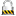

Alle anderen Informationen werden von der Datenbank ausgelesen.
Benutzung
Im Feld [Geräte] (Device) über das Drop Down Menü ein Gerät auswählen und mit dem Button "Zeigen" die Abfrage starten. Die Werte der Interface Counter werden in der Tabelle blau hinterlegt, sofern bereits Daten über die jeweilige Schnittstelle ausgetauscht worden sind. Setzt man zusätzlich das Häkchen im Feld [IF Graphen], dann werden die Werte der Interface Counter graphisch dargestellt. Klickt man auf einen solchen Graphen, dann wird man direkt zum Modul {Interface -> Graph} weitergeleitet.Setzt man das Häkchen im Feld [Bevölkerung], wird in einer zusätzlichen Spalte die Anzahl der angeschlossenen Geräte an einer Schnittstelle angezeigt. Klickt man auf diese Anzahl, wird man direkt zum Modul {Nodes -> List} weiter geleitet.
Eine Änderung des Schnittstellenzustands oder ein dramatischer Anstieg von Schnittstellen-Fehlern wird farblich hervorgehoben. Die Idee hinter diesem Farbschema ist, einen schnellen Überblick des Schnittstellenzustandes zu ermöglichen.
Die Werkzeug-Symbole im Feld [Übersicht] sind abhängig von den Benutzerberechtigungen und dem jeweiligen Gerätetyp. Fährt man mit der Maus über ein Werkzeug-Symbol, wird dessen Bedeutung in einer Kurzinfo (Quick info) angezeigt.
Die Bedeutung der Werkzeugsymbole im Feld [Übersicht]:
- Zeigt die Monitoring-Meldungen des jeweiligen Gerätes an.
 Zeigt die Konfigurationsdatei des jeweiligen Gerätes an.
Zeigt die Konfigurationsdatei des jeweiligen Gerätes an.
 Zeigt die angeschlossenen Endgeräte am jeweiligen Gerät.
Zeigt die angeschlossenen Endgeräte am jeweiligen Gerät.
 Zeigt eine Liste der vorhanden Schnittstellen im jeweiligen Gerät.
Zeigt eine Liste der vorhanden Schnittstellen im jeweiligen Gerät.
- Zeigt eine Liste der vorhanden Module im jeweiligen Gerät.
- Zeigt die Routing-Tabelle des jeweiligen Gerätes.
 Zeigt eine Liste der Multicast-Routen des jeweiligen Gerätes.
Zeigt eine Liste der Multicast-Routen des jeweiligen Gerätes.
- Zeigt eine Liste der vorhandenen Vlan-IDs auf dem jeweiligen Gerät.
- Zeigt Spanning Tree Informationen zum jeweiligen Gerät.
 Holt sich das Logfile des jeweiligen Gerätes und stellt es dar.
Holt sich das Logfile des jeweiligen Gerätes und stellt es dar.
 Ermöglicht eine schnelle Korrektur der Linkzugehörigkeit mit Nachbargeräten.
Ermöglicht eine schnelle Korrektur der Linkzugehörigkeit mit Nachbargeräten.
 Wurde das Loginpasswort des jeweiligen Gerätes geändert, wird NeDi hiermit aufgefordert, sich erneut anzumelden.
Wurde das Loginpasswort des jeweiligen Gerätes geändert, wird NeDi hiermit aufgefordert, sich erneut anzumelden.
 Löscht das jeweilige Geräte beim nächsten Netzwerk-Discovery aus der Datenbank.
Löscht das jeweilige Geräte beim nächsten Netzwerk-Discovery aus der Datenbank.
Direkte Links für die Geräteadministration im Feld [Übersicht]:
 Öffnet eine unverschlüsselte Telnet-Verbindung mit dem jeweiligen Gerät.
Öffnet eine unverschlüsselte Telnet-Verbindung mit dem jeweiligen Gerät.
-  Öffnet eine verschlüsselte SSH-Verbindung mit dem jeweiligen Gerät.
 Öffnet eine unverschlüsselte Webbrowser-Verbindung mit dem jeweiligen Gerät.
Öffnet eine unverschlüsselte Webbrowser-Verbindung mit dem jeweiligen Gerät.
 Öffnet eine verschlüsselte Webbrowser-Verbindung mit dem jeweiligen Gerät.
Öffnet eine verschlüsselte Webbrowser-Verbindung mit dem jeweiligen Gerät.
Diverse weitere Links:
- Klickt man im Feld [Übersicht] in der Zeile [System] auf die Graphiken, wird man zum Modul [Device Graphen] weitergeleitet.
- Klickt man im Feld [Links] auf einen Gerätenamen, wird nun dieses Gerät im Modul [Device Status] angezeigt.
- Klickt man im Feld [VLANs] auf eine VLAN-ID, wird man zum Modul [Topologie Karte] weitergeleitet.
- Klickt man im Feld [Interfaces] in der Spalte [Adresse] auf eine IP, wird man zum Modul [Topologie Karte] weitergeleitet.